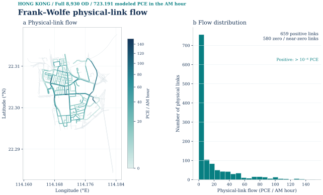
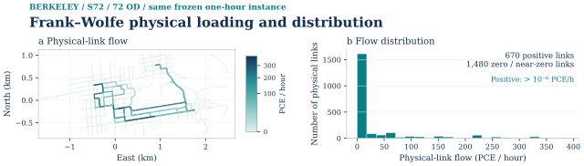

2026-10-08 · SAVED-RESULT PLOT REVIEW
图件对照与短轨迹审计 · 修正版
此前“已与香港、波士顿统一”的表述不够准确：卡片格式与字体一致，并不代表绘图对象、指标和科学问题一致。本页按真实绘图代码和保存数据纠正这一点。
短曲线究竟说明什么
| 情形 | 直接证据 | 能得出的判断 |
|---|---|---|
| Ann Arbor FW | 仅 iteration 0；gap 5.10282992009334e−5 < 冻结阈值 1e−4。 | 初始化在容差内；不是精确最优证明，也没有证明“区域太小”。 |
| Urbana T4 | 总脉冲0.05162314826794134 PCE；最小物理时间弧容量3.75 PCE；原证明标记全部容量约束冗余。 | 需求/容量设置不具拥堵难度；CG 两阶段各一个记录，LR/ADMM 各一个更新。 |
| Pittsburgh T4 | 总脉冲0.045027548453549955 PCE；最小容量2.5 PCE；同样全部容量约束冗余。 | 有直接的非绑定解释；不能把短序列判作算法错误或城市面积的因果结果。 |
| PIT_T05 | 每个面板比较一次残差与它的门限；横轴是数值量。 | 不是起点—终点迭代曲线。正确保留为补充停止检查。 |
| Chicago | CG 268条记录；LR759条记录但没有自身可行上界；ADMM9次完成更新且全局门限未过。 | 不是短记录城市；仅CG获接受，失败诊断单独展开。 |
目前没有证据支持“所有短曲线都是算法错误”，也没有进行改变区域、需求强度或容量的对照实验，因此不能声称已证明面积的因果作用。香港也存在只有两个 Phase II 保存检查点的图，不能将旧城市概括成所有方法都有长轨迹。
这次改了什么
24 张本地保存数据派生图已接回原主页及城市大卷。原科学图件和放行字节保留，未运行求解器。当前接收状态仍为129项＋PIT_T05修正4项，共133项；本轮重绘不冒充新的 S0 字节放行。
| 图件任务 | 香港/波士顿真实参考 | 此前错误 | 修正与数据边界 |
|---|---|---|---|
| 静态 FW / finite | HK G-F052 / H1：本方法物理流量地图＋全部物理路段直方图，包括零值。Boston finite 另含 OD 平衡。 | Berkeley、Urbana、Pittsburgh 的标量目标值或前十路段条形图不能对应这种主图。 | 四城选定实例分别读取各方法自己的全向量；另更新五城全案例 FW 地图＋全路段分布。 |
| Native | HK：Native 绝对物理流量、相对同实例 FW 的有符号空间差值、完整路段分布。 | 维数柱状图和守恒门限只能作诊断。不能将旧失败状态的流量标作当前 accepted。 | Berkeley 使用各自 rank26/52 向量；Urbana 采用当前已接受 outer9 独立向量。守恒过程另保留。 |
| CG Phase I | 总人工量与实际轮次；若存有逐 OD 人工量才画热图。 | 不同模型人工变量的含义不同；不能统一称 unmet demand。 | Chicago 为 OD 等式人工需求；Urbana/Pittsburgh 为容量行松弛。后两者只存一个 Phase I 记录。 |
| CG Phase II / pricing | 实际 Phase II 目标，合法同模型参考；逐 OD 定价或已保存的全图最小定价。 | 不能把只有终点的比较图当完整过程，不能借用未完成的 HiGHS 目标。 | Chicago 展示 208 个 Phase I 与 60 个 Phase II 记录、四 OD 定价；参考界仅用最终合法自身 CG dual bound。 |
| ADMM 主图 | HK G-F097：原单位可行性、primal、rho-scaled dual、log10绝对目标误差。Boston G-F065 的目标面板则为原始目标值。 | PIT_T05 为残差与门限横向比较，不是迭代过程；UC 旧 dual 单位 PCE 错误。 | Urbana/Pittsburgh 按 HK 四指标画真实 iteration1 单点，dual 使用 min；没有虚构起点或补插值。 |
| ADMM 守恒与空间终点 | HK G-F101：最终四 OD × 最坏35个时间节点；物理图为两方法地图、差值、散点。 | Top10 路段条形图不能代表全网空间比较；最终节点热图不是迭代热图。 | 从真实保存 x 与冻结弧顺序恢复 UC/PIT 守恒矩阵，逐 OD 对上原独立检查；PIT 完整9106条实例化路段比较，8428条仅作背景。 |
相同绘图问题，保留各自真实地理




全部41条短记录 / 终点图核查
这是重绘前逐图审计快照，包含主图及保留历史图；并非41次独立运行，也并非41个错误。另有42幅双城参考图核查，以及149个优化相关资产索引。
| 城市 / 图件（原锚点保留） | 图型 / 实际保存数 | 解释与证据边界 | 原图 / 绘图函数 |
|---|---|---|---|
| 1 · Ann Arbor Initialization already meets the frozen thresholds | single_initialization_checksaved_rows = 1; indices = [0]; fw_updates = 0 | 先按自由流最短路进行全有全无加载，然后检查当前BPR成本下的相对间隙。5.10282992009334e-5低于预先冻结的1e-4，所以未做FW更新。是容差内初始解，不等于精确最优，也不能归因于城市范围小。 若要解释初始接近最优的物理原因，需要逐路段v/c、BPR增量和初始/当前最短路切换统计；本轮没有把面积小当作因果证据。 | 审计时原图static |
| 2 · Urbana–Champaign Frank–Wolfe saved objective and gap | single_initialization_checksaved_rows = 1; indices = [0]; fw_updates = 0 | 原始fw_trace只有iteration0，初始加载已经通过1e-4门槛。单点是完整已存记录，不是抽样截断；保存为0的间隙不能升级为精确数学最优证明。原四阶段城市实例与S72转移实验分开。 没有后续迭代；若需要拥挤条件下的收敛过程，须另行定义并授权新实验，不能补点。 | 审计时原图trace |
| 3 · Urbana–Champaign Initial assignment check | single_initialization_checksaved_rows = 1; indices = [0]; fw_updates = 0 | 原始fw_trace只有iteration0，初始加载已经通过1e-4门槛。单点是完整已存记录，不是抽样截断；保存为0的间隙不能升级为精确数学最优证明。原四阶段城市实例与S72转移实验分开。 没有后续迭代；若需要拥挤条件下的收敛过程，须另行定义并授权新实验，不能补点。 | 审计时原图see source record |
| 4 · Ithaca Frank–Wolfe saved objective and gap | single_initialization_checksaved_rows = 1; indices = [0]; fw_updates = 0 | 原始fw_trace只有iteration0，初始加载已经通过1e-4门槛。单点是完整已存记录，不是抽样截断；保存为0的间隙不能升级为精确数学最优证明。原四阶段城市实例与S72转移实验分开。 没有后续迭代；若需要拥挤条件下的收敛过程，须另行定义并授权新实验，不能补点。 | 审计时原图trace |
| 5 · Ithaca Initial assignment check | single_initialization_checksaved_rows = 1; indices = [0]; fw_updates = 0 | 原始fw_trace只有iteration0，初始加载已经通过1e-4门槛。单点是完整已存记录，不是抽样截断；保存为0的间隙不能升级为精确数学最优证明。原四阶段城市实例与S72转移实验分开。 没有后续迭代；若需要拥挤条件下的收敛过程，须另行定义并授权新实验，不能补点。 | 审计时原图see source record |
| 6 · Pittsburgh Frank–Wolfe saved objective and gap | single_initialization_checksaved_rows = 1; indices = [0]; fw_updates = 0 | 原始fw_trace只有iteration0，初始加载已经通过1e-4门槛。单点是完整已存记录，不是抽样截断；保存为0的间隙不能升级为精确数学最优证明。原四阶段城市实例与S72转移实验分开。 没有后续迭代；若需要拥挤条件下的收敛过程，须另行定义并授权新实验，不能补点。 | 审计时原图trace |
| 7 · Pittsburgh Initial assignment check | single_initialization_checksaved_rows = 1; indices = [0]; fw_updates = 0 | 原始fw_trace只有iteration0，初始加载已经通过1e-4门槛。单点是完整已存记录，不是抽样截断；保存为0的间隙不能升级为精确数学最优证明。原四阶段城市实例与S72转移实验分开。 没有后续迭代；若需要拥挤条件下的收敛过程，须另行定义并授权新实验，不能补点。 | 审计时原图see source record |
| 8 · Urbana–Champaign CG Phase I: artificial flow at the saved check | single_round_per_phase_certificatephase_I_saved_rounds = 1; phase_II_saved_rounds = 1; round_indices_per_phase = [1]; seed_paths = 4; added_after_seed = 0 | 真实T4低需求场景：总脉冲0.051623148267941343 PCE低于最小物理弧容量3.75 PCE；原LP证书明确all_capacity_rows_redundant=true。各方法独立用自由流最短路初始化，非借LP解warmstart；这不测试绑定瓶颈或拥堵下的迭代难度。 Phase I人工量是373条(UC)/233条(PIT)容量约束的松弛量，不是每OD未满足需求；每phase一个证书点。 未保存每OD reduced-cost历史向量；只有各phase最小值，不能伪造4OD热图。；CG_PHASE_I_STATE完整保留capacity人工变量，可做正确的容量行诊断，但与旧城OD artificial不可混用。 | 审计时原图main |
| 9 · Urbana–Champaign CG Phase II: saved objective against exact LP | single_round_per_phase_certificatephase_I_saved_rounds = 1; phase_II_saved_rounds = 1; round_indices_per_phase = [1]; seed_paths = 4; added_after_seed = 0 | 真实T4低需求场景：总脉冲0.051623148267941343 PCE低于最小物理弧容量3.75 PCE；原LP证书明确all_capacity_rows_redundant=true。各方法独立用自由流最短路初始化，非借LP解warmstart；这不测试绑定瓶颈或拥堵下的迭代难度。 Phase I人工量是373条(UC)/233条(PIT)容量约束的松弛量，不是每OD未满足需求；每phase一个证书点。 未保存每OD reduced-cost历史向量；只有各phase最小值，不能伪造4OD热图。；CG_PHASE_I_STATE完整保留capacity人工变量，可做正确的容量行诊断，但与旧城OD artificial不可混用。 | 审计时原图main |
| 10 · Urbana–Champaign CG closure: full-DAG pricing by phase | single_round_per_phase_certificatephase_I_saved_rounds = 1; phase_II_saved_rounds = 1; round_indices_per_phase = [1]; seed_paths = 4; added_after_seed = 0 | 真实T4低需求场景：总脉冲0.051623148267941343 PCE低于最小物理弧容量3.75 PCE；原LP证书明确all_capacity_rows_redundant=true。各方法独立用自由流最短路初始化，非借LP解warmstart；这不测试绑定瓶颈或拥堵下的迭代难度。 Phase I人工量是373条(UC)/233条(PIT)容量约束的松弛量，不是每OD未满足需求；每phase一个证书点。 未保存每OD reduced-cost历史向量；只有各phase最小值，不能伪造4OD热图。；CG_PHASE_I_STATE完整保留capacity人工变量，可做正确的容量行诊断，但与旧城OD artificial不可混用。 | 审计时原图main |
| 11 · Urbana–Champaign Saved two-phase CG reduced costs are checked against all legal DAG arcs for each commodity; a matching objective alone does not establish closure. | single_round_per_phase_certificatephase_I_saved_rounds = 1; phase_II_saved_rounds = 1; round_indices_per_phase = [1]; seed_paths = 4; added_after_seed = 0 | 真实T4低需求场景：总脉冲0.051623148267941343 PCE低于最小物理弧容量3.75 PCE；原LP证书明确all_capacity_rows_redundant=true。各方法独立用自由流最短路初始化，非借LP解warmstart；这不测试绑定瓶颈或拥堵下的迭代难度。 Phase I人工量是373条(UC)/233条(PIT)容量约束的松弛量，不是每OD未满足需求；每phase一个证书点。 未保存每OD reduced-cost历史向量；只有各phase最小值，不能伪造4OD热图。；CG_PHASE_I_STATE完整保留capacity人工变量，可做正确的容量行诊断，但与旧城OD artificial不可混用。 | 审计时原图see source record |
| 12 · Urbana–Champaign Lagrangian bounds at the actual saved iteration | single_iteration_bound_certificatelr_iterations = 1; recovery_calls = 1; pool_paths = 4; positive_multipliers = 0 | 真实T4低需求场景：总脉冲0.051623148267941343 PCE低于最小物理弧容量3.75 PCE；原LP证书明确all_capacity_rows_redundant=true。各方法独立用自由流最短路初始化，非借LP解warmstart；这不测试绑定瓶颈或拥堵下的迭代难度。 第一条下界与独立恢复可行上界在浮点精度内相合，projected subgradient=0；无多轮价格变化。 长轨迹不存在；只能画真实单点下/上界、零价格和一次恢复。 | 审计时原图main |
| 13 · Urbana–Champaign Capacity prices remain zero in this T4 instance | single_iteration_bound_certificatelr_iterations = 1; recovery_calls = 1; pool_paths = 4; positive_multipliers = 0 | 真实T4低需求场景：总脉冲0.051623148267941343 PCE低于最小物理弧容量3.75 PCE；原LP证书明确all_capacity_rows_redundant=true。各方法独立用自由流最短路初始化，非借LP解warmstart；这不测试绑定瓶颈或拥堵下的迭代难度。 第一条下界与独立恢复可行上界在浮点精度内相合，projected subgradient=0；无多轮价格变化。 长轨迹不存在；只能画真实单点下/上界、零价格和一次恢复。 | 审计时原图main |
| 14 · Urbana–Champaign The LR curve uses saved nonnegative arc prices for its dual lower bound and a separately recovered feasible path solution for its upper bound. | single_iteration_bound_certificatelr_iterations = 1; recovery_calls = 1; pool_paths = 4; positive_multipliers = 0 | 真实T4低需求场景：总脉冲0.051623148267941343 PCE低于最小物理弧容量3.75 PCE；原LP证书明确all_capacity_rows_redundant=true。各方法独立用自由流最短路初始化，非借LP解warmstart；这不测试绑定瓶颈或拥堵下的迭代难度。 第一条下界与独立恢复可行上界在浮点精度内相合，projected subgradient=0；无多轮价格变化。 长轨迹不存在；只能画真实单点下/上界、零价格和一次恢复。 | 审计时原图see source record |
| 15 · Urbana–Champaign ADMM objective: one completed cold-start update | single_completed_update_diagnostichistory_rows = 1; completed_updates = 1; indices = [1]; independent_cold_confirmation_updates = 1 | 真实T4低需求场景：总脉冲0.051623148267941343 PCE低于最小物理弧容量3.75 PCE；原LP证书明确all_capacity_rows_redundant=true。各方法独立用自由流最短路初始化，非借LP解warmstart；这不测试绑定瓶颈或拥堵下的迭代难度。 result.json确认cold_start=true,parent_completed_iterations=0；kernel在完成一次localQP、projection和dual-update之后才写history并检查stop。 现有公开plot只暴露6列；完整保存history还含capacity_residual和balance_residual，可据其补全四面板。；UC当前admm-residuals以及历史UC_T05把rho-scaled dual写成PCE有单位错误，应为min。 | 审计时原图main |
| 16 · Urbana–Champaign ADMM residuals and recorded stopping thresholds | single_completed_update_diagnostichistory_rows = 1; completed_updates = 1; indices = [1]; independent_cold_confirmation_updates = 1 | 真实T4低需求场景：总脉冲0.051623148267941343 PCE低于最小物理弧容量3.75 PCE；原LP证书明确all_capacity_rows_redundant=true。各方法独立用自由流最短路初始化，非借LP解warmstart；这不测试绑定瓶颈或拥堵下的迭代难度。 result.json确认cold_start=true,parent_completed_iterations=0；kernel在完成一次localQP、projection和dual-update之后才写history并检查stop。 现有公开plot只暴露6列；完整保存history还含capacity_residual和balance_residual，可据其补全四面板。；UC当前admm-residuals以及历史UC_T05把rho-scaled dual写成PCE有单位错误，应为min。 | 审计时原图main |
| 17 · Urbana–Champaign Dots show actual residuals and ticks show registered main-stage stopping thresholds. The zero primal residual uses a stated display floor on the log axis; independent endpoint checks determine scientific status. | single_completed_update_diagnostichistory_rows = 1; completed_updates = 1; indices = [1]; independent_cold_confirmation_updates = 1 | 真实T4低需求场景：总脉冲0.051623148267941343 PCE低于最小物理弧容量3.75 PCE；原LP证书明确all_capacity_rows_redundant=true。各方法独立用自由流最短路初始化，非借LP解warmstart；这不测试绑定瓶颈或拥堵下的迭代难度。 result.json确认cold_start=true,parent_completed_iterations=0；kernel在完成一次localQP、projection和dual-update之后才写history并检查stop。 现有公开plot只暴露6列；完整保存history还含capacity_residual和balance_residual，可据其补全四面板。；UC当前admm-residuals以及历史UC_T05把rho-scaled dual写成PCE有单位错误，应为min。 | 审计时原图see source record |
| 18 · Pittsburgh Column generation: full-DAG pricing closure | single_round_per_phase_certificatephase_I_saved_rounds = 1; phase_II_saved_rounds = 1; round_indices_per_phase = [1]; seed_paths = 4; added_after_seed = 0 | 真实T4低需求场景：总脉冲0.045027548453549955 PCE低于最小物理弧容量2.5 PCE；原LP证书明确all_capacity_rows_redundant=true。各方法独立用自由流最短路初始化，非借LP解warmstart；这不测试绑定瓶颈或拥堵下的迭代难度。 Phase I人工量是373条(UC)/233条(PIT)容量约束的松弛量，不是每OD未满足需求；每phase一个证书点。 未保存每OD reduced-cost历史向量；只有各phase最小值，不能伪造4OD热图。；CG_PHASE_I_STATE完整保留capacity人工变量，可做正确的容量行诊断，但与旧城OD artificial不可混用。 | 审计时原图see source record |
| 19 · Pittsburgh LR: saved lower and recovered upper bounds | single_iteration_bound_certificatelr_iterations = 1; recovery_calls = 1; pool_paths = 4; positive_multipliers = 0 | 真实T4低需求场景：总脉冲0.045027548453549955 PCE低于最小物理弧容量2.5 PCE；原LP证书明确all_capacity_rows_redundant=true。各方法独立用自由流最短路初始化，非借LP解warmstart；这不测试绑定瓶颈或拥堵下的迭代难度。 第一条下界与独立恢复可行上界在浮点精度内相合，projected subgradient=0；无多轮价格变化。 长轨迹不存在；只能画真实单点下/上界、零价格和一次恢复。 | 审计时原图see source record |
| 20 · Pittsburgh ADMM: primal and rho-scaled dual stopping gates | single_completed_update_diagnostichistory_rows = 1; completed_updates = 1; indices = [1]; independent_cold_confirmation_updates = 1 | 真实T4低需求场景：总脉冲0.045027548453549955 PCE低于最小物理弧容量2.5 PCE；原LP证书明确all_capacity_rows_redundant=true。各方法独立用自由流最短路初始化，非借LP解warmstart；这不测试绑定瓶颈或拥堵下的迭代难度。 result.json确认cold_start=true,parent_completed_iterations=0；kernel在完成一次localQP、projection和dual-update之后才写history并检查stop。 现有公开plot只暴露6列；完整保存history还含capacity_residual和balance_residual，可据其补全四面板。；当前PIT_T05已改为PCE和min两个单位；应保留该正确证书。 | 审计时原图see source record |
| 21 · Ann Arbor Saved physical-link assignment | endpoint_summary_or_mapiterations_inferred_from_bars = False | 该图展示保存端点的空间流量、方法目标/门槛对比或单次初始检查；类别/路段不是迭代。可以保留，但不能用条形图数目推导收敛速度或称作完整优化过程。 逐图实际指标与renderer见sidecar及canonical/targeted audit；缺少时间轨迹时不补线。 | 审计时原图static |
| 22 · Urbana–Champaign Static methods on the same selected demand | endpoint_summary_or_mapiterations_inferred_from_bars = False | 该图展示保存端点的空间流量、方法目标/门槛对比或单次初始检查；类别/路段不是迭代。可以保留，但不能用条形图数目推导收敛速度或称作完整优化过程。 逐图实际指标与renderer见sidecar及canonical/targeted audit；缺少时间轨迹时不补线。 | 审计时原图main |
| 23 · Urbana–Champaign Selected static physical-road loading | endpoint_summary_or_mapiterations_inferred_from_bars = False | 该图展示保存端点的空间流量、方法目标/门槛对比或单次初始检查；类别/路段不是迭代。可以保留，但不能用条形图数目推导收敛速度或称作完整优化过程。 逐图实际指标与renderer见sidecar及canonical/targeted audit；缺少时间轨迹时不补线。 | 审计时原图main |
| 24 · Urbana–Champaign Lagrangian recovery: four feasible path flows | endpoint_summary_or_mapiterations_inferred_from_bars = False | 该图展示保存端点的空间流量、方法目标/门槛对比或单次初始检查；类别/路段不是迭代。可以保留，但不能用条形图数目推导收敛速度或称作完整优化过程。 逐图实际指标与renderer见sidecar及canonical/targeted audit；缺少时间轨迹时不补线。 | 审计时原图main |
| 25 · Urbana–Champaign ADMM and exact LP on physical roads | endpoint_summary_or_mapiterations_inferred_from_bars = False | 该图展示保存端点的空间流量、方法目标/门槛对比或单次初始检查；类别/路段不是迭代。可以保留，但不能用条形图数目推导收敛速度或称作完整优化过程。 逐图实际指标与renderer见sidecar及canonical/targeted audit；缺少时间轨迹时不补线。 | 审计时原图main |
| 26 · Urbana–Champaign FW and finite solve the same selected static instance. Their objective agreement is a bounded reconstruction result; the initial FW loading already passed. | endpoint_summary_or_mapiterations_inferred_from_bars = False | 该图展示保存端点的空间流量、方法目标/门槛对比或单次初始检查；类别/路段不是迭代。可以保留，但不能用条形图数目推导收敛速度或称作完整优化过程。 逐图实际指标与renderer见sidecar及canonical/targeted audit；缺少时间轨迹时不补线。 | 审计时原图see source record |
| 27 · Urbana–Champaign These are the largest physical solver-road flows for the 72-OD static cohort. Turn arcs and the excluded 346 OD pairs are not represented as additional roads or trips. | endpoint_summary_or_mapiterations_inferred_from_bars = False | 该图展示保存端点的空间流量、方法目标/门槛对比或单次初始检查；类别/路段不是迭代。可以保留，但不能用条形图数目推导收敛速度或称作完整优化过程。 逐图实际指标与renderer见sidecar及canonical/targeted audit；缺少时间轨迹时不补线。 | 审计时原图see source record |
| 28 · Urbana–Champaign Physical road flow sums ADMM x across time copies sharing each GMNS link ID. This is a modeled four-OD pulse result, not an observed 30-second count or a spatial map. | endpoint_summary_or_mapiterations_inferred_from_bars = False | 该图展示保存端点的空间流量、方法目标/门槛对比或单次初始检查；类别/路段不是迭代。可以保留，但不能用条形图数目推导收敛速度或称作完整优化过程。 逐图实际指标与renderer见sidecar及canonical/targeted audit；缺少时间轨迹时不补线。 | 审计时原图see source record |
| 29 · Urbana–Champaign Exact-DAG LP, CG, LR feasible recovery, and ADMM x use the same frozen T cost and demand. Their agreement tests numerical transfer on this low-demand pulse; it does not measure congestion improvement. | endpoint_summary_or_mapiterations_inferred_from_bars = False | 该图展示保存端点的空间流量、方法目标/门槛对比或单次初始检查；类别/路段不是迭代。可以保留，但不能用条形图数目推导收敛速度或称作完整优化过程。 逐图实际指标与renderer见sidecar及canonical/targeted audit；缺少时间轨迹时不补线。 | 审计时原图see source record |
| 30 · Pittsburgh Static FW and finite-path reference | endpoint_summary_or_mapiterations_inferred_from_bars = False | 该图展示保存端点的空间流量、方法目标/门槛对比或单次初始检查；类别/路段不是迭代。可以保留，但不能用条形图数目推导收敛速度或称作完整优化过程。 逐图实际指标与renderer见sidecar及canonical/targeted audit；缺少时间轨迹时不补线。 | 审计时原图see source record |
| 31 · Pittsburgh FW and finite: same-instance objective check | endpoint_summary_or_mapiterations_inferred_from_bars = False | 该图展示保存端点的空间流量、方法目标/门槛对比或单次初始检查；类别/路段不是迭代。可以保留，但不能用条形图数目推导收敛速度或称作完整优化过程。 逐图实际指标与renderer见sidecar及canonical/targeted audit；缺少时间轨迹时不补线。 | 审计时原图see source record |
| 32 · Pittsburgh S72 physical-road flow: selected cohort | endpoint_summary_or_mapiterations_inferred_from_bars = False | 该图展示保存端点的空间流量、方法目标/门槛对比或单次初始检查；类别/路段不是迭代。可以保留，但不能用条形图数目推导收敛速度或称作完整优化过程。 逐图实际指标与renderer见sidecar及canonical/targeted audit；缺少时间轨迹时不补线。 | 审计时原图see source record |
| 33 · Pittsburgh ADMM endpoint: physical-road pulse flow | endpoint_summary_or_mapiterations_inferred_from_bars = False | 该图展示保存端点的空间流量、方法目标/门槛对比或单次初始检查；类别/路段不是迭代。可以保留，但不能用条形图数目推导收敛速度或称作完整优化过程。 逐图实际指标与renderer见sidecar及canonical/targeted audit；缺少时间轨迹时不补线。 | 审计时原图see source record |
| 34 · Pittsburgh Same-T4 objective comparison | endpoint_summary_or_mapiterations_inferred_from_bars = False | 该图展示保存端点的空间流量、方法目标/门槛对比或单次初始检查；类别/路段不是迭代。可以保留，但不能用条形图数目推导收敛速度或称作完整优化过程。 逐图实际指标与renderer见sidecar及canonical/targeted audit；缺少时间轨迹时不补线。 | 审计时原图see source record |
| 35 · Berkeley Frank–Wolfe: initial stopping check | endpoint_summary_or_mapiterations_inferred_from_bars = False | 该图展示保存端点的空间流量、方法目标/门槛对比或单次初始检查；类别/路段不是迭代。可以保留，但不能用条形图数目推导收敛速度或称作完整优化过程。 逐图实际指标与renderer见sidecar及canonical/targeted audit；缺少时间轨迹时不补线。 | 审计时原图fw_saved_check |
| 36 · Berkeley S72 same-instance method diagnostics | endpoint_summary_or_mapiterations_inferred_from_bars = False | 该图展示保存端点的空间流量、方法目标/门槛对比或单次初始检查；类别/路段不是迭代。可以保留，但不能用条形图数目推导收敛速度或称作完整优化过程。 逐图实际指标与renderer见sidecar及canonical/targeted audit；缺少时间轨迹时不补线。 | 审计时原图s02_same_instance_methods |
| 37 · Berkeley Physical assignment and initial check | endpoint_summary_or_mapiterations_inferred_from_bars = False | 该图展示保存端点的空间流量、方法目标/门槛对比或单次初始检查；类别/路段不是迭代。可以保留，但不能用条形图数目推导收敛速度或称作完整优化过程。 逐图实际指标与renderer见sidecar及canonical/targeted audit；缺少时间轨迹时不补线。 | 审计时原图see source record |
| 38 · Sioux Falls Shared-capacity exchange | before_after_capacity_exchangedisplay_states = 2; selected_phase_I_round = 34 | 两个条是一个真实容量交换事件的前/后端点，不是把全程压成两轮。完整Phase I另图显示全部保存轮次。 | 审计时原图see source record |
| 39 · Sioux Falls Path-pool growth and primal recovery | full_pool_history_with_two_recovery_callsLR_history_rows = 10; recovery_calls = 2; call_iterations = [1, 10] | 路径池全部10个记录均画出；只有iteration1与10真实调用恢复LP，分别不可行/可行。中间没有保存恢复结果，不能画中间恢复成功轨迹。 | 审计时原图see source record |
| 40 · Sioux Falls Shared-capacity exchange | before_after_capacity_exchangedisplay_states = 2; selected_phase_I_round = 39 | 两个条是一个真实容量交换事件的前/后端点，不是把全程压成两轮。完整Phase I另图显示全部保存轮次。 | 审计时原图see source record |
| 41 · Sioux Falls Path-pool growth and primal recovery | full_pool_history_with_two_recovery_callsLR_history_rows = 10; recovery_calls = 2; call_iterations = [1, 10] | 路径池全部10个记录均画出；只有iteration1与10真实调用恢复LP，分别不可行/可行。中间没有保存恢复结果，不能画中间恢复成功轨迹。 | 审计时原图see source record |


Ann Arbor · 本次接入
| 主页主图 / 补充图 | 方法 | 定位和数据 |
|---|---|---|
| Frank–Wolfe physical-link flow | fw | 城市大卷同图 · SVG · 绘图数据 |

Urbana–Champaign · 本次接入


Ithaca · 本次接入
| 主页主图 / 补充图 | 方法 | 定位和数据 |
|---|---|---|
| Frank–Wolfe physical-link flow | fw | 城市大卷同图 · SVG · 绘图数据 |

Berkeley · 本次接入
| 主页主图 / 补充图 | 方法 | 定位和数据 |
|---|---|---|
| Frank–Wolfe physical loading and distribution | fw | 城市大卷同图 · SVG · 绘图数据 |
| Finite-path reference and physical support | finite-path | 城市大卷同图 · SVG · 绘图数据 |
| Native L3 physical flows against S72 FW | native-l3 | 城市大卷同图 · SVG · 绘图数据 |


Pittsburgh · 本次接入


Chicago · 本次接入


完整指南与历史记录
完整修正版指南（含42幅参考表） · 上传给 ChatGPT 的须知 · 逐图数据表 JSON
历史 R6 截止页（已被当前状态替代）：原文保留供追溯，不代表当前仍待接收。
在此阅读完整指南
修正版图件对照指南：绘图目的、指标、真实记录与重绘边界
版本日期：2026-10-08。供用户审阅，并与 CHATGPT_READ_FIRST.md 一起上传 ChatGPT。
1. 本版解决什么问题
本版根据实际绘图代码、图内轴标签、原始已存结果和当前页面资产核对，修正此前把“相同字体与卡片样式”当作“图件已经一致”的问题。一致应先指回答相同问题、使用对应指标与正确单位，再指布局、字体与颜色。 地图回答流量分配在哪里，直方图回答完整路段总体如何分布，迭代图回答真实过程怎样变化，门限图回答一个保存状态是否过关；四者不能互相替代。
本次核心范围是九城静态分配、Native、时空图优化 CG/LR/ADMM 及其必要输入/图构造证据。两座参考城市逐图核对了 42 幅：Boston 24 幅、Hong Kong 18 幅，包括紧邻优化图的需求与图构造图；这不是声称两城所有网站图仅有42幅。九城优化资产清单有149个独立资产，短记录/端点详细审计为41个资产。一个实验可能有多个历史或新旧图资产，资产数不能当成实验次数。
本版是对既有总指南的语义修订，未重新核验人口、四阶段所有输入图等不在本轮范围的内容。那些内容仍可查 ../figure_guide_r7/GUIDE_CORE.md、FULL_FIGURE_INDEX.json 和 ../figure_alignment_r2/EXPERIMENT_AND_PLOTTING_REVIEW.md，但其中涉及本版明确纠正的指标、单位或可绘性时，以本版及实际冻结数据为准。旧建议方案不能冒充当前旧城实际绘图实现。
阅读证据的优先次序
- 先确认城市、实例、需求、路网、时段及方法本身的状态，再看图。
- 查该图的实际 PNG/SVG、绘图函数、输入列和数据哈希。不能只根据网页标题推断图型。
- 对数轴上的显示下限、直方图总体、几何连接和保存记录数必须明确。
- 可直接重绘已存结果；不存在的迭代、每 OD 数值、价格或恢复结果不得补造。
- 科学结果接收、文件字节放行、当前显示位置是三件事，分别记录。
参考审计的101个唯一来源文件均与原 source 记录哈希一致；42幅参考资产与前次审计哈希匹配，并与真正原导出 SVG 在换行标准化后相同。核查方式为函数/来源/实际 SVG 内容逐图核对，加8幅代表性 PNG 的视觉检查；不声称42幅均逐张做过像素级检查。
2. 先区分实例，再比较图
| 城市/实例 | 当前可确认的边界 | 不能混在一起的东西 |
|---|---|---|
| Boston 扩展 FW | 500 / 2,000 / 30,790 源区 OD，分别加载为453 / 1,684 / 17,522节点 OD；每组5091条物理路段 | 三组是三个真实运行，不是三个迭代；不能等同26 OD控制实例 |
| Boston B1 / Algorithm B | 453节点 OD、1936.238475 PCE；任务专用适配结果 | 不自动扩大为官方通用适配器已验证 |
| Boston 静态控制/有限路径/Native | ABS_PLANNED 26 OD、130条路径；相同控制实例内比较 | 有限路径参考不等于有限时域时空图，也不自动等于完整路径空间证明 |
| Boston 动态 CG/LR/ADMM | 10 OD、同一有限共享容量图；ADMM实际253次外迭代 | 目标值一致不表示所有弧流相同 |
| Hong Kong 全静态 | 95 SSG、8930有向正 OD；一小时 AM 723.191 PCE、1239物理路段 | 不等同 H1、HK10 或 HK4 |
| Hong Kong H1 | 26 OD、126合法路径、52.17845064587021 PCE/h；3446求解弧中1239物理弧 | H1有界静态方法比较不等同8930 OD全静态 |
| Hong Kong HK10 | CG/LR：10 commodity、30秒步长、50步/25分钟、111条选定物理路段 | HK4 ADMM不是 HK10的同一组结果 |
| Hong Kong HK4 | ADMM：4个输入选定 OD/出发记录、10.84561943484106 PCE；11942节点、24598弧、165次实际更新 | 不能与 HK10的69条正流路段或75左右的目标值直接合并 |
| Berkeley S72 | 72正 OD、360冻结路径、953.049842713612 PCE/声明小时、2150物理路段 | 静态初始检查、Native端点及 T4时空优化必须分别说明 |
| Urbana–Champaign | 全城市静态418 OD；另有 S72的72 OD/360路径/321.6296598827645 PCE；T4为4 commodity小脉冲 | 11365物理求解弧保留42个A/B半段；不能换成5913条预检路网，不能把 S72/T4当全城结果 |
| Pittsburgh | 全城市静态1406 OD；S72为72 OD、360路径、149.92142389506472 PCE/小时；T4为4 commodity | S72不包括原全城其余1334 OD；原 OUT起点加载省略起点路段遍历，不能为了地图补回 |
| Chicago | 全城市静态与另行 S20、T4分开；S20为20 OD、1754.9482512397267 PCE/小时 | CG已接收；Native/LR/ADMM未过门槛、HiGHS受资源限制不能被CG状态覆盖 |
| Ann Arbor | 25区、600 OD；14203总求解弧中5138物理路段；08:00–09:00 HBW | 不是旧4059路段中心线预检图；图是模型场景而非实测交通 |
| Ithaca | 完整保存的15148物理路段；11:00–12:00 local activity时段 | 不能改标为其他城市的08:00–09:00 HBW |
3. Boston/Hong Kong 的真实绘图配方
3.1 函数与样式来源
以下缩写相对于项目根目录，不含本机盘符；行号对应本次审计保存的文件版本，具体 SHA 在 CANONICAL_BOSTON_HK_OPTIMIZATION_AUDIT.json。
| 缩写 | 代码位置 |
|---|---|
| B | work/structure_review_20261003/stage3/boston/render_boston.py |
| H | work/structure_review_20261003/stage3/hong-kong/render_hong_kong.py |
| A | work/structure_review_20261003/stage3/hong-kong/render_advanced.py |
| S | work/structure_review_20261003/stage3/revisions/20261004-r01/render_static_cards.py |
| M | work/structure_review_20261003/stage3/revisions/20261004-r01/render_map_layouts.py |
| L | work/structure_review_20261003/stage3/shared/render_lagrangian_details.py |
| I | work/structure_review_20261003/stage3/hong-kong/render_static_inputs.py |
| T | work/structure_review_20261003/revisions/20261004-r07/figure-work/render_layered_construction.py |
| 共用样式 | work/structure_review_20261003/stage3/figure_style.py：configure、new_figure、format_axes、compact_header |
共同外观是既有 Layout C、DejaVu Serif、白底、蓝/青/深蓝、较淡网格、紧凑面板及可编辑文字 SVG。这些外观函数不决定科学图型；同字体的目标值条形图仍不能代替物理流量地图。 本轮沿用已有 Python/Matplotlib 风格，没有用生成式图片替代科学绘图。
3.2 按用途对应的配方
| 要回答的问题 | 真实旧城参考与函数 | 指标、坐标及布局 | 等价重绘最低要求 |
|---|---|---|---|
| 一个静态方法把流量放到哪里？整体分布怎样？ | HK G-F052/G-F182；H static_maps→static_flow_distribution（132–142）；Boston G-F141，S boston_b1（104–116） |
物理地图＋全部物理路段直方图；HK/B1为22箱；零流路段保留。地图用 PowerNorm(0.5)，色条显示原流量单位；直方图x=流量、y=路段数量 |
该方法自己的完整端点向量＋物理ID＋真实几何＋单位与时段。不能借另一个几乎相同的方法向量 |
| 多个需求规模的结果如何变化？ | Boston C-BOSTON-FW-SCALES；S boston_scales（73–102） |
三张独立规模地图＋每组5091路段的直方图阶梯；共用24个箱边界、数量轴取对数；地图共用绝对色标 | 三个实际保存的实例。新城市只有一个实例时不能复制端点冒充多规模 |
| 有限路径解是否满足逐 OD需求？ | Boston C-BOSTON-FINITE-STATIC；S boston_finite（118–137） |
物理流量图＋全部5091路段20箱直方图＋26个OD的路径流量和减需求散点 | 自己的路段/路径流、路径到OD映射及冻结需求。只有最大残差摘要不能生成逐OD图 |
| Native重构流量和参考差在哪里？ | HK C-HK-L3-STATIC；A h1_static（4–23）；Boston C-BOSTON-ABS-L3，B static_maps（190） |
HK：rank26绝对流＋rank26−FW、rank52−FW有符号差＋rank26全路段直方图。Boston：FW/26/52三张绝对图＋两张差图 | 保存的实际 Native向量，或 major/minor/U/x1/theta、合法路径弧序列可严格重构。差图使用同实例参考、共用对称零中心色标 |
| Native与有限路径参考的物理残差分布？ | Boston G-F145；B static_maps |
rank26−finite的地图＋25箱差值直方图，单位放大为10^-6 vehicle trips | 这是物理路段差值，不是逐OD可行性图，也不是绝对流量图 |
| CG是否消除人工需求？ | Boston C-BOSTON-CG-PHASE1，B cg_figures（226）；HK C-HK-CG-PHASE1，A cg_figures（25） |
全保存轮次的人工流总量阶梯图＋commodity×轮次热图；分别91状态0–90、13状态0–12；原单位vehicles/PCE | 确认人工变量确实在OD守恒式中，且保存逐OD人工量。容量行松弛量不能套同名热图 |
| CG真实成本如何下降？ | Boston G-F079；B cg_figures |
Phase II 16状态0–15、15更新；线性vehicle-min；实际 post-step阶梯；实心严格改善、空心方形退化非增更新；同图LP虚线 | 保存的成本、轮次、真实提交类别、相同图LP。HK当前无Phase II目标历史图，只有2个保存检查点；G-F092是最终流量地图 |
| CG是否在完整定价空间闭合？ | Boston C-BOSTON-CG-CLOSURE；HK G-F093 |
Boston列池数量、最小RC轨迹及逐需求RC；HK逐commodity最小未生成完整路径 reduced cost条形图，单位min，门槛1e-6 | 完整DAG/完整路径定价记录。非有限的“Exhausted”须原样解释，不能转成0；目标一致不代替定价证书 |
| LR下界、可行上界和证书怎样？ | Boston G-F147，B admm_lagrangian（312）；HK C-HK-LAGRANGIAN-BOUNDS，L bounds（118） |
best valid lower与独立恢复的feasible upper对真实迭代；另面板 gap×100%；显示原冻结1%门槛；缺失UB/gap保留空缺 | 真实下界、可行恢复上界及证书。松弛目标、外部LP或可行见证不能冒充LR自己恢复的UB |
| LR产生什么价格、什么时候恢复？ | 两城 *-LAGRANGIAN-PRICES/RECOVERY；L prices（58）/recovery（90） |
前10个严格正容量乘子λ(min)＋按时间的正价弧数量；恢复图只画真实调用轮次及路径池大小，实心可行/空心失败 | 乘子ID/时间、实际恢复调用记录；不可插入未发生的恢复，失败目标null不当0 |
| ADMM过程是否同时达到停止条件？ | Boston G-F065，B admm_lagrangian；HK G-F097，A admm_figures（40） |
四面板分别显示原单位可行性、primal、rho-scaled dual和目标/误差；用各自真实门槛；详见下节不同口径 | 完整保存history＋同图LP参考。一个真实状态可画单标记四面板，不能称长收敛轨迹 |
| 局部守恒问题在哪里？ | Boston G-F069；HK G-F101 |
Boston=commodity×iteration热图，log10(balance)，显示下限1e-12 vehicles；HK=最终4 commodity×最差35时空节点，LogNorm(1e-15,1e-5) PCE |
前者需要逐commodity历史；后者需要完整最终状态、准确弧/节点顺序和供给；最终节点图不能冒充时间历史 |
| ADMM与同图LP空间流是否一致？ | 两城 C-*-ADMM-FLOWS；M admm（137） |
2×2：ADMM图、LP图、有符号差图、全物理路段identity散点；绝对量共用平方根色标，差值共用对称色标 | 两者自己的完整向量＋同图物理聚合规则＋几何。不能把CG流命名为ADMM，也不能因目标近似就称路径完全相同 |
3.3 ADMM误差口径必须单独写清楚
| 项目 | Boston G-F065 | Hong Kong G-F097 / HK4 | 本轮 UC/PIT 单次更新四面板 |
|---|---|---|---|
| 真正保存长度 | 253次外迭代 | 165次更新，300是预算而非真实记录数 | 各1次完整更新；不能绘制虚构iteration0 |
| primal与守恒/容量 | vehicles；残差显示下限1e-14 | PCE；残差显示下限1e-13 | PCE；只对精确0显示为1e-16，所有正值不变 |
| dual | rho-scaled、cost/vehicle，量纲为时间 | rho-scaled、cost/vehicle，量纲为时间 | min；门槛也为min |
| 目标面板 | 原始目标值vehicle-min，线性y轴＋同图LP | log10(max(abs(objective−LP),1e-15)/(1 vehicle-minute)) |
log10(abs(ADMM−LP)/(1 PCE·min))，1e-15显示下限，本次未触发 |
| 能否称LP相对误差？ | 不能：画的是原目标 | 不能：画的是绝对误差的log10 | 不能：也是绝对误差的log10 |
| 接收门槛与所画指标 | 不把图的单位替换成另城门槛 | 科学验收另用相对目标误差1e-3；并非图上当前指标，也不是Berkeley的1e-4 | 沿用各自冻结停止门槛；不借香港165次制造过程 |
对PCE·min目标，rho量纲为min/PCE；rho × ||z−z_previous||因此是min。Urbana旧 admm-residuals.svg 和历史 UC_T05.svg 把它标成PCE属于标签错误，应纠正而不改动数值。
当前已正式修正放行的 PIT_T05：primal为0，门槛0.002695306468400502 PCE；dual为1.510761290551328e-13，门槛0.002692127782999908 min。精确0只为对数显示放在1e-16。图中“残差→门槛”的线段连接两个不同意义的数值，不是两次迭代，更不是收敛轨迹。该正确检查图应保留；新四面板是补全比较用途的本地派生图。
Urbana对应值为：primal0 / 门槛0.0023967625505464836 PCE；dual3.4388605706864527e-13 / 门槛0.0023912306455045277 min；最大守恒误差5.351749497492834e-15 PCE，容量违反0。
4. 已识别问题、修正原则及不应误判的问题
| 原现象 | 实际问题或边界 | 本版处理 |
|---|---|---|
| Berkeley“Static method comparison”看起来不像旧城 | 原s02是终点目标微差、signed gap symlog、残差×10^10和坐标维数四面板；不是物理分配图 | 补三张真实FW/finite/Native空间图；原数值诊断保留作补充 |
| UC静态只有目标柱/间隙点和通用地图 | 方法自身空间向量与完整路段总体未一一展示；旧图部分直方图仅统计正流路段 | 从保存的各方法向量画S72 FW/finite；finite追加72 OD质量残差；全路段含0 |
| Pitt只显示若干代表路段 | PIT_S03/PIT_T07的10路段条形摘要不是完整空间分配证据 | 从完整保存向量增加S72各方法地图，以及真实ADMM–LP空间差和守恒图；旧摘要保留 |
| Ann/Urbana/Ithaca/Pitt FW一开始就结束 | 容差内初始加载检查，不等于被抽样截短；没有后续迭代 | 显示完整物理端点图，并保留单次检查；不补造下降曲线 |
| UC/PIT CG、LR、ADMM记录极短 | 该T4脉冲很小、原证书证明容量约束冗余，真实独立初始化后即过门槛 | 公开真实记录长度和实例边界；不能推广为拥挤情境算法优势 |
| UC/PIT CG人工量想套旧城逐OD热图 | 其人工量是容量约束行松弛，UC373行/PIT233行，并非OD未满足需求 | 可画容量行诊断，但命名和轴必须相符；缺逐ODRC不可补造 |
| Berkeley LR看起来平直 | 平直本身不证明错误。必须查真实LB、恢复UB、保存精度、尺度和每次运行身份 | 保留原10次accepted与独立300次冷启动诊断的身份，不能接成长310次“同一条轨迹” |
| Chicago失败方法拉低版面整齐度 | Native/LR/ADMM未过门槛与HiGHS资源限制都是结果；CG独立证书已接收 | 接收CG与失败诊断分开；保留268条CG、759条LR、9次ADMM及资源/重试证据 |
| 把香港当成所有图都很长的标准 | HK Phase II只存2检查点，网页并无长成本曲线 | 允许真实短记录；统一的是提问、指标和诚实显示，不是线段数量 |
Ann Arbor“初始即通过”的准确解释
自由流最短路全有全无加载后，程序检查当前BPR成本下相对间隙。保存的iteration0相对间隙 5.10282992009334e-5，低于事先冻结的 1e-4；节点守恒误差 5.684341886080801e-13 PCE，低于1e-7；目标 7871.970629926563 PCE·min。因此FW后续更新次数为0。这是容差内端点，不是精确数学最优证明，也没有证据能直接归因为“城市区域太小”。若要解释拥挤程度，需要检查完整v/c、BPR增量、最短路径切换；不能靠地图面积推断。
完整城市静态的UC和Ithaca保存初始相对间隙为0；Pittsburgh为 4.773992564434884e-7，均低于1e-4。Pittsburgh不是0，不能照抄泛化文字。数值0也不能自动升级为无限精度的理论证明。
UC/PIT“只跑一轮”的准确解释
| 项目 | Urbana–Champaign T4 | Pittsburgh T4 |
|---|---|---|
| 总PCE脉冲 | 0.05162314826794134 | 0.045027548453549955 |
| 最小物理时间弧容量PCE | 3.75 | 2.5 |
| 原LP证书 | all_capacity_rows_redundant=true |
同左 |
| CG | Phase I 1记录＋Phase II 1记录；4 seed paths、之后新增0 | 同左 |
| LR | 1迭代、1次恢复、4条池路径、0个正乘子 | 同左 |
| ADMM | 一次local QP、投影、dual更新完成后写history并检查停止 | 同左 |
这不是拿LP最优解做warm start：保存结果明确 cold_start=true、parent_completed_iterations=0。独立冷启动确认也为1次，但它是另一个运行，不能合并为同一运行2次迭代。证书支持的是当前需求/容量设定下无绑定容量约束的有界检查；它不支持“算法错误”“因为城区小”或“在拥堵场景更快”的结论。
5. 41个短记录/端点资产：完整逐项表
此表对应重绘前页面快照 SHORT_TRACE_AUDIT.json，用于解释原图与保留历史。不是41次求解，不是41项错误清单。表中不同路径可能是同一数据的不同版本；仍逐一列出以免遗漏。原路径均以 candidate_repo/docs/ 为基准。保存次数是实际数据，不按绘图条形数或连线数推断。
| # | 城市／原资产（docs相对路径） | 真正保存长度 | 实际图型 | 正确解释／处置 |
|---|---|---|---|---|
| 1 | Ann Arborassets/city-alignment-r3/ann-arbor/aa-a02.svg |
1检查，iteration0；0更新 | 初始容差检查 | gap=5.10282992009334e-5<1e-4；保留检查，完整空间分配另图。 |
| 2 | Urbana–Champaignassets/city-alignment-r3/urbana-champaign/trace.svg |
1检查，iteration0；0更新 | 初始容差检查 | 全城市418 OD实例；保存gap=0，不能补造后续轨迹。 |
| 3 | Urbana–Champaignassets/six-city-r3-1/urbana-champaign/FS_A02.svg |
1检查，iteration0；0更新 | 同上之历史版本 | 与上一条是同一类检查的独立图资产，不是第二次迭代。 |
| 4 | Ithacaassets/city-alignment-r3/ithaca/trace.svg |
1检查，iteration0；0更新 | 初始容差检查 | 保存gap=0；完整端点图与单点检查各有用途。 |
| 5 | Ithacaassets/six-city-r3-1/ithaca/FS_A02.svg |
1检查，iteration0；0更新 | 同上之历史版本 | 不能把两个图资产数当两轮求解。 |
| 6 | Pittsburghassets/city-alignment-r3/pittsburgh/trace.svg |
1检查，iteration0；0更新 | 初始容差检查 | 全城市1406 OD；gap=4.773992564434884e-7<1e-4，不是0。 |
| 7 | Pittsburghassets/six-city-r3-1/pittsburgh/FS_A02.svg |
1检查，iteration0；0更新 | 同上之历史版本 | 与S72转移实例分开；保留历史，不添加迭代。 |
| 8 | Urbana–Champaignassets/city-alignment-r3/urbana-transfer/cg-phase1.svg |
Phase I/II各1记录；4 seed，新增0 | CG容量松弛检查 | Phase I为373容量行松弛；非逐OD人工需求热图。 |
| 9 | Urbana–Champaignassets/city-alignment-r3/urbana-transfer/cg-objective.svg |
Phase I/II各1记录；4 seed，新增0 | CG真实目标单点 | 单个Phase II成本，不能称成本下降过程。 |
| 10 | Urbana–Champaignassets/city-alignment-r3/urbana-transfer/cg-closure.svg |
Phase I/II各1记录；4 seed，新增0 | CG定价汇总 | 只存每phase最小RC；不足以还原4OD逐项轨迹。 |
| 11 | Urbana–Champaignassets/city-alignment-r3/urbana-transfer/original-method-figures/UC_T03.svg |
Phase I/II各1记录；4 seed，新增0 | 上述CG历史原图 | 保留原来源；相同科学运行另一个图版本。 |
| 12 | Urbana–Champaignassets/city-alignment-r3/urbana-transfer/lr-bounds.svg |
1迭代；1恢复；4路径；正价0 | LR边界/证书单点 | 下界与独立恢复可行上界浮点相合；不拉伸为多轮线。 |
| 13 | Urbana–Champaignassets/city-alignment-r3/urbana-transfer/lr-prices.svg |
1迭代；正乘子0 | LR零价格状态 | 没有多轮价格演化或正价弧排行可补造。 |
| 14 | Urbana–Champaignassets/city-alignment-r3/urbana-transfer/original-method-figures/UC_T04.svg |
1迭代；1恢复；4路径 | LR历史原图 | 保留真实单点/恢复身份；不是被隐藏的长过程。 |
| 15 | Urbana–Champaignassets/city-alignment-r3/urbana-transfer/admm-objective.svg |
1完整更新，index1；另一次独立确认1更新 | ADMM目标端点 | 四面板补全的是指标，不是新增迭代。 |
| 16 | Urbana–Champaignassets/city-alignment-r3/urbana-transfer/admm-residuals.svg |
1完整更新，index1 | ADMM停止检查；单位缺陷 | 旧dual=PCE标签错误；rho-scaled dual应为min，值不变。 |
| 17 | Urbana–Champaignassets/city-alignment-r3/urbana-transfer/original-method-figures/UC_T05.svg |
1完整更新，index1 | ADMM历史原图；单位缺陷 | 旧UC_T05同一单位错误；历史保留并由正确版本解释。 |
| 18 | Pittsburghassets/algorithm-transfer-r8/pittsburgh/PIT_T03.svg |
Phase I/II各1记录；4 seed，新增0 | CG两个phase定价检查 | Phase I为233容量行松弛；只有phase最小RC，非逐OD热图。 |
| 19 | Pittsburghassets/algorithm-transfer-r8/pittsburgh/PIT_T04.svg |
1迭代；1恢复；4路径；正价0 | LR端点 | 真实无绑定容量T4；不推断拥堵性能。 |
| 20 | Pittsburghassets/algorithm-transfer-r8/pittsburgh/PIT_T05.png |
1完整更新；另一次独立确认1更新 | PIT_T05已修正停止门限图 | 残差→门槛线段不是两次迭代；PCE/min正确，正式四文件放行仍有效。 |
| 21 | Ann Arborassets/city-alignment-r3/ann-arbor/aa-a01.svg |
端点；无从条形推断迭代数 | 物理地图＋流量分布 | 本来已是合法空间端点；本轮统一完整总体和布局，不称旧图算法错。 |
| 22 | Urbana–Champaignassets/city-alignment-r3/urbana-transfer/static-comparison.svg |
各方法保存端点 | 目标柱＋gap点 | 可作数值比较补充，不能代替各方法物理地图。 |
| 23 | Urbana–Champaignassets/city-alignment-r3/urbana-transfer/static-map.svg |
一个空间端点 | 物理地图＋正流直方图 | 只计正流总体不等价于旧城全路段含0；本轮补完整总体。 |
| 24 | Urbana–Champaignassets/city-alignment-r3/urbana-transfer/lr-recovery.svg |
1真实恢复调用 | LR恢复端点 | 只有一次调用，不能补中间恢复路径。 |
| 25 | Urbana–Champaignassets/city-alignment-r3/urbana-transfer/admm-physical.svg |
一个ADMM最终状态 | ADMM–LP空间端点 | 合法最终状态证据，不能按路段数解释迭代。 |
| 26 | Urbana–Champaignassets/city-alignment-r3/urbana-transfer/original-method-figures/UC_S01.svg |
各方法保存端点 | 静态方法标量比较原图 | 保留补充；新方法地图读取各自向量。 |
| 27 | Urbana–Champaignassets/city-alignment-r3/urbana-transfer/original-method-figures/UC_S03.svg |
代表路段类别 | 路段流量条形摘要 | 不能据代表路段声称全路网分布。 |
| 28 | Urbana–Champaignassets/city-alignment-r3/urbana-transfer/original-method-figures/UC_T07.svg |
最终状态路段摘要 | 有限时域流量端点 | 不是过程图；本轮另有最终节点守恒图。 |
| 29 | Urbana–Champaignassets/city-alignment-r3/urbana-transfer/original-method-figures/UC_T08.svg |
各方法端点类别 | 时空方法端点比较 | 类别数不是迭代数，方法接收状态各自保留。 |
| 30 | Pittsburghassets/city-alignment-r3/pittsburgh-transfer/static-reference.svg |
有限路径参考端点 | 静态参考标量 | 不是完整方法空间图；保留出处和原实例。 |
| 31 | Pittsburghassets/algorithm-transfer-r8/pittsburgh/PIT_S01.svg |
各方法保存端点 | 静态方法比较 | Native失败与FW/finite端点分别标明。 |
| 32 | Pittsburghassets/algorithm-transfer-r8/pittsburgh/PIT_S03.svg |
10代表路段 | 静态路段条形摘要 | 不足以等价旧城完整物理地图；现已另绘完整S72向量。 |
| 33 | Pittsburghassets/algorithm-transfer-r8/pittsburgh/PIT_T07.svg |
10代表路段 | ADMM物理条形摘要 | 不能代替完整ADMM–LP空间差；新图用真实保存向量。 |
| 34 | Pittsburghassets/algorithm-transfer-r8/pittsburgh/PIT_T08.svg |
各方法端点类别 | 时空方法端点比较 | 保留各自证书，不把方法条数当迭代数。 |
| 35 | Berkeleyassets/city-alignment-r3/berkeley/fw_saved_check.svg |
1初始检查；0 FW更新 | Berkeley FW检查 | 旧标题/布局不能代替FW空间分配；保留检查作补充。 |
| 36 | Berkeleyassets/berkeley-atlas-r2/s02_same_instance_methods.svg |
各方法终点；4个指标面板 | 目标微差/gap/残差/维数 | signed gap symlog、残差×10^10、维数不是物理流量。 |
| 37 | Berkeleyassets/six-city-r3-1/berkeley/f13_assignment.svg |
一个静态加载端点 | 分配地图 | 合法端点证据；新S72方法图不能改称新的迭代结果。 |
| 38 | Sioux Fallsassets/atlas/sioux-scale/r05-sioux200-cg-exchange.svg |
2状态：第34轮事件前/后 | 真实CG容量交换事件 | 不是把整个CG压成两轮；完整Phase I在另图。 |
| 39 | Sioux Fallsassets/atlas/sioux-scale/r05-sioux200-lagrangian-recovery.svg |
LR历史10；恢复2次，轮1/10 | 路径池10记录＋恢复标记 | 只两次真实恢复，第一次失败、后一次可行；不能补中间成功。 |
| 40 | Sioux Fallsassets/atlas/sioux-scale/r05-sioux250-cg-exchange.svg |
2状态：第39轮事件前/后 | 真实CG容量交换事件 | 事件快照与完整Phase I分开。 |
| 41 | Sioux Fallsassets/atlas/sioux-scale/r05-sioux250-lagrangian-recovery.svg |
LR历史10；恢复2次，轮1/10 | 路径池10记录＋恢复标记 | 真实稀疏调用不是缺失收敛历史。 |
6. 必须保留的长历史、失败门槛和稀疏证据
| 城市 | 实际记录 | 必须保留的解释 |
|---|---|---|
| Boston | CG II 16状态；LR300；ADMM253 | LR末端gap约1.1002%，未过1%门槛；不能因为有可行恢复就标LR accepted |
| Hong Kong | CG I13；CG II仅2检查点；LR25；ADMM165 | HK10 LR最终gap0.7444191022435463%；前1–9次缺UB/gap，必须留空；HK4 ADMM另实例 |
| Sioux Falls | tap-b18保存向量；两规模CG首次人工流为0在51/62轮；LR各10；ADMM85/101 | 事件图两状态、恢复图仅两调用均有真实含义，不是把全部记录抽样成两点 |
| Berkeley | CG I5、II3状态；原LR10 accepted；另300次冷启动诊断；ADMM170；Native每rank3个outer步骤 | 原10次与300次是不同运行；不能抹掉原证书，也不能接为310次。原始数值和新长诊断分别溯源 |
| Chicago | 全城市FW4检查/3更新；CG268=208 Phase I＋60 Phase II；LR759；ADMM9完整更新 | CG依自身full-graph证书接收；LR无自身恢复可行UB/证书gap，ADMM/Native未过门槛，HiGHS受资源限制。失败不是丢弃依据 |
| Urbana–Champaign | Native两rank均保留outer1–9；到9才过原1e-6 PCE门槛 | 当前accepted outer9守恒诊断继续可见；不能移为“旧失败历史”或把之前未过关状态删掉 |
| Pittsburgh | Native两rank8个步骤 | 原单位OD门槛1e-6 PCE仍未通过；保持diagnostic，不借FW/finite/CG结果改写为accepted |
Chicago CG的Phase I人工变量是4个OD守恒等式中的人工需求流，不是UC/PIT那种容量行松弛。其208状态轮0–207，总人工流20.373394302610762→0 PCE；首次过1e-8门槛在207。Phase II全部60状态轮0–59，目标374.533127798287→241.2185242449435 PCE·min；最终同运行、完整图有效的CG对偶界为241.2185242449434。新图虚线标的是这个最终界，不是每轮的界轨迹，也不是受资源限制的HiGHS结果。Chicago保存了4个OD的完整定价数据，已经可以并已经绘制定价闭合；但未保存逐OD人工流历史，不能凭总量拆分热图。
7. 本轮实际新图：24张本地派生图
按 INTEGRATED_FIGURES.json 及最后补充的 staged/urbana-native/MANIFEST.json：15张静态图＋6张ADMM图＋3张CG图＝24张。图来自已经保存的结果，求解器调用0；不增加迭代、不改变需求、路径、容量或冻结门槛。下表页面路径以 candidate_repo/docs/ 为基准，具体字节哈希、尺寸、caption和下载文件在对应manifest/source中。集成清单确认的是路径绑定，最终浏览器/响应式与整站保护验收由本轮另行报告。
| # | 城市/新图 | 现在画什么 | 已确认边界 | 页面资产 |
|---|---|---|---|---|
| 1 | Ann Arborfw-physical-flow | 全城市FW物理地图＋22箱全路段直方图 | 5138物理路段；含3147精确0，1991条>1e-6 PCE；单初始检查 | assets/plot-semantics-r9/ann-arbor/fw-physical-flow.svg |
| 2 | Urbana–Champaignfw-physical-flow | 全城市FW物理地图＋22箱全路段直方图 | 11365物理遍历、含7681精确0；保留A/B半段；418 OD实例 | assets/plot-semantics-r9/urbana-champaign/fw-physical-flow.svg |
| 3 | Ithacafw-physical-flow | 全城市FW物理地图＋22箱全路段直方图 | 15148路段，含12789精确0；11:00–12:00声明时段 | assets/plot-semantics-r9/ithaca/fw-physical-flow.svg |
| 4 | Chicagofw-physical-flow | 全城市FW物理地图＋22箱全路段直方图 | 27129路段，含25238精确0；3实际更新后的端点 | assets/plot-semantics-r9/chicago/fw-physical-flow.svg |
| 5 | Pittsburghfw-physical-flow | 全城市FW物理地图＋22箱全路段直方图 | 17534路段，含12563精确0；与S72分开 | assets/plot-semantics-r9/pittsburgh/fw-physical-flow.svg |
| 6 | Berkeleyfw-map-distribution | S72 FW自身地图＋22箱全路段分布 | 2150路段；自身FW列；不冒充多轮过程 | assets/plot-semantics-r9/berkeley/fw-map-distribution.svg |
| 7 | Berkeleyfinite-map-distribution | S72 finite自身地图＋22箱全路段分布 | 自身finite列；与FW值相同是本实例结果，不是复制向量 | assets/plot-semantics-r9/berkeley/finite-map-distribution.svg |
| 8 | Berkeleynative-map-differences | rank26自身流、26−FW/52−FW差图及全路段分布 | 差值共用对称色标；极小差异不是交通改善；保留原始极微小负值 | assets/plot-semantics-r9/berkeley/native-map-differences.svg |
| 9 | Urbana–Champaigns72-fw-map-distribution | S72 FW自身地图＋全路段分布 | 72 OD/360路径；11365路段；42个A/B半段完整 | assets/plot-semantics-r9/urbana-champaign/s72-fw-map-distribution.svg |
| 10 | Urbana–Champaigns72-finite-map-distribution | finite自身地图＋分布＋72OD质量残差 | 360路径流严格按OD求和减冻结需求，72残差均0 | assets/plot-semantics-r9/urbana-champaign/s72-finite-map-distribution.svg |
| 11 | Chicagocg-phase-one | 208真实Phase I状态的总人工OD流 | OD人工需求；非容量松弛；逐OD人工热图缺保存值 | assets/plot-semantics-r9/chicago/cg-phase-one.svg |
| 12 | Chicagocg-phase-two | 60真实Phase II目标状态＋最终有效CG界 | 无降采样/插值；界不是HiGHS参考也不是每轮界 | assets/plot-semantics-r9/chicago/cg-phase-two.svg |
| 13 | Chicagocg-pricing-closure | 完整保存的4OD定价闭合 | CG自身full-graph证书；与失败方法分开 | assets/plot-semantics-r9/chicago/cg-pricing-closure.svg |
| 14 | Chicagos20-fw-map-distribution | S20自身FW地图＋全27129路段22箱分布 | 20 OD，1754.9482512397267 PCE/小时；自身REUSED_PRIOR_ACCEPTED | assets/plot-semantics-r9/chicago/s20-fw-map-distribution.svg |
| 15 | Chicagos20-finite-map-distribution | S20自身finite地图＋全路段22箱分布 | 独立保存向量；不接受Native/LR/ADMM | assets/plot-semantics-r9/chicago/s20-finite-map-distribution.svg |
| 16 | Pittsburghpittsburgh-s72-fw-flow | S72自身FW地图＋全路段30箱分布 | 17534物理弧，排除38850转向弧；零FW更新；不是原全城1406 OD | assets/plot-semantics-r9/pittsburgh/pittsburgh-s72-fw-flow.svg |
| 17 | Pittsburghpittsburgh-s72-finite-flow | S72自身finite地图＋同箱边界分布 | 自身360路径解；一次记录SLSQP迭代；保留OUT起点加载定义 | assets/plot-semantics-r9/pittsburgh/pittsburgh-s72-finite-flow.svg |
| 18 | Urbana–Champaignurbana-champaign-admm-main | 守恒/容量、primal、dual、绝对目标误差四面板 | 一个真实完整更新；PCE与min分开；不造iteration0 | assets/plot-semantics-r9/urbana-champaign/urbana-champaign-admm-main.svg |
| 19 | Urbana–Champaignurbana-champaign-admm-stopping-corrected | 正确单位的残差/门槛补充检查 | dual和门槛都是min；旧数值不变；不是长过程 | assets/plot-semantics-r9/urbana-champaign/urbana-champaign-admm-stopping-corrected.svg |
| 20 | Pittsburghpittsburgh-admm-main | 与HK同指标提问的四面板单点 | 只有一次完整更新；不是165次曲线；原PIT_T05保留 | assets/plot-semantics-r9/pittsburgh/pittsburgh-admm-main.svg |
| 21 | Urbana–Champaignadmm-final-balance | 最终4commodity×最差35时空节点热图 | 从4×1429496弧流重构；668725节点；四个原独立检查精确复现 | assets/plot-semantics-r9/urbana-champaign/admm-final-balance.svg |
| 22 | Pittsburghpittsburgh-admm-physical | ADMM、同图LP、有符号差图＋全路段identity散点 | 17534背景物理路段中9106在时空模型实例化；另8428背景不能称求解后零流 | assets/plot-semantics-r9/pittsburgh/pittsburgh-admm-physical.svg |
| 23 | Pittsburghpittsburgh-admm-conservation | 最终4commodity×最差35时空节点热图 | 700226节点；最大2.7850292342213303e-15 PCE，复现各OD原检查 | assets/plot-semantics-r9/pittsburgh/pittsburgh-admm-conservation.svg |
| 24 | Urbana–Champaignnative-map-differences | accepted outer9 rank26自身绝对图、26−FW/52−FW差图、rank26全路段22箱分布 | 原v按26602求解弧准确顺序读取；选11365物理弧，保留42个A/B半段、排除15237转向；UC_S02_C1仍当前可见 | assets/plot-semantics-r9/urbana-champaign/native-map-differences.svg |
新图应如何解读
- 静态物理地图与直方图使用同一完整方法向量。含0的直方图总体必须等于物理路段总数；彩色地图为可读性隐藏极小叠加值时，原始数值仍在plot data，灰色图底仍完整。绝对色标使用原单位，平方根归一化不把单位改成平方根PCE。
- Pittsburgh S72采用30箱，其他本轮主要静态图采用22箱；这属于已明确的箱数差异，不能声称每个绘图参数完全相同。要比较同实例两个方法时，共用箱边界和绝对色标；城市之间不同需求/单位不可盲目共用色条上限。
- Berkeley三个方法图使用真实自身向量；FW与finite恰好相等不意味着可以在代码中替换来源。Native rank26/52对FW最大差约2.645862196e-8、1.5853784987e-6 PCE/h，属于极小数值差，不是交通改善。
- UC Native新图使用accepted outer9的rank26/rank52自身显式v，两次原接收回放匹配；两个完整向量最小值均精确0，没有clipping或借FW替换。对同实例FW最大绝对物理差为5.94165001644e-8和2.7191668373e-5 PCE/h；这不是交通改善或速度优越性证据。其当前守恒图与新空间图互补。
- UC最终节点热图用保存x的准确行序、弧端点和供给计算
abs(outgoing−incoming−supply)；四个commodity最大值分别为3.810395106798668e-15、3.597901841530229e-15、5.351749497492834e-15、4.333118451874013e-15 PCE，与原独立检查精确一致。图选最差35节点，但全部668725节点用于筛选和最大值验证。色标下限1e-15只是显示，不把实际0改成正误差。 - Pitt ADMM与LP最大物理差3.1115818793010805e-14 PCE。极小正数可能增加“严格>0”支持数，不能因此声称发生大规模改道；应同时读阈值与差值幅度。保存的ADMM目标0.24793241990524933、LP目标0.2479324199027461 PCE·min，并不要求弧向量逐元素相同。
- 原先单点检查、标量对比、代表路段摘要和失败结果保留为有标签的补充证据。当前UC accepted outer9守恒诊断仍作为当前内容保留，而非收进失败历史。
暂存来源清单
staged/static_fw/STATIC_FW_STAGING_RESULT.json、staged/static_fw/VISUAL_AND_DATA_QA.json；staged/berkeley/MANIFEST.json；staged/urbana-static/MANIFEST.json；staged/urbana-native/MANIFEST.json；staged/chicago-static/MANIFEST.json；staged/chicago-cg/MANIFEST.json；staged/pittsburgh-static/MANIFEST.json；staged/finite-admm/FIGURES.json；staged/urbana-balance/URBANA_BALANCE_STAGING_RESULT.json；PITTSBURGH_FLOW_DERIVATION.json；PITTSBURGH_FLOW_VISUAL_QA.json。
8. 仍然不能等价绘制的内容：具体缺什么
| 希望与旧城完全等价的图 | 当前缺口/事实 | 现在能做什么；不能做什么 |
|---|---|---|
| 单初始检查城市的长FW收敛曲线 | 实际没有后续更新，不是漏存许多轮 | 可做全路段端点图、容差检查；不插值，不复制点，不以模拟曲线伪装实录 |
| UC/PIT CG逐OD人工流热图 | 人工变量本来位于容量行，并非OD人工流 | 可基于373/233容量行保存状态画对应诊断；不能改标OD |
| UC/PIT逐OD reduced-cost历史或最终条形 | 完整算法计算过逐OD值，但现有保存只留每phase最小值 | 可显示真实最小值与证书；没有保存的4OD向量不能凭总最小值拆开 |
| Chicago逐OD人工需求热图 | 总量208状态完整；4OD人工量各自历史未保存 | 总量阶梯图可画且已画；4OD定价数据另有完整保存可画，不要混为同一缺口 |
| UC/PIT LR多轮下界/价格/恢复 | 只有一迭代、一恢复，全部正乘子数为0 | 真实单点与零状态可画；不能制造价格演化或多次恢复 |
| UC/PIT ADMM多轮曲线 | 各只保存并实际完成1次；独立确认是另一次运行 | 单标记四面板可画；保存最终state足以做节点热图/空间图，但不能生成逐轮热图 |
| Boston式commodity×iteration守恒图用于UC/PIT | 有最终完整x，缺多轮逐commodity历史，且没有多轮运行 | 可等价HK最终commodity×node图，不能等价Boston时间热图 |
| Boston三个需求尺度地图用于单尺度城市 | 不存在三个匹配实例 | 仅画当前实例；额外需求尺度是新实验，应另行明确设计、运行身份及授权 |
| Native绝对/差值地图 | 需各rank自身完整物理向量或可验证完整重构；当前UC/PIT接收/失败门槛还不同 | Berkeley已具备并绘制；UC已从accepted outer09自身v按精确prepared72弧序完成独立Native空间图，不能继续声称UC无完整向量。Pittsburgh不能因目标相近而借FW流。现有约束残差诊断继续保留 |
| 带逐OD质量残差的有限路径三面板 | 路段端点向量不自动提供路径到OD求和资料 | UC S72已找到360路径和72需求并绘出；仅有两面板的其他新图不声称含此诊断 |
| Chicago LR可行UB/证书gap、HiGHS最优参考线 | LR自己没有已恢复可行UB；HiGHS受资源限制 | 保留失败事实与独立可行见证的身份；不能借外部见证改成LR own UB，不能把CG bound写成HiGHS optimum |
| 接受端点变成拥挤情景性能比较 | 无绑定容量的T4不足以评价瓶颈压力、规模或求解速度 | 只能报告本实例达到固定门槛；如要研究拥挤条件，应作为新的独立实验，而不是改图“增加难度” |
以上“缺”区分不存在的迭代、未保存的明细、尚未具备严格映射的状态。找到了旧保存数据即可重新评估可绘性；不能把“不在某个公开JSON里”直接断言为全项目永远没有。
9. 参考两城42幅完整定位表
以下包括优化主图及其紧邻输入/构造证据；所有页面精确锚点、图路径、函数行号、源列、SHA和轴文字在 CANONICAL_BOSTON_HK_OPTIMIZATION_AUDIT.json 的逐图记录中。表中标“卷”表示位于城市独立页；“首页＋卷”是同一图在两个位置，不计两幅。
| 城市 | 图ID | 真正绘制内容/边界 | 实际函数 | 当前摆放 |
|---|---|---|---|---|
| Boston | C-BOSTON-SOURCE-MARGINS | 500/all选中源区的production/attraction四地图；person trips，非新生成总体人口 | render_boston.py::scale_maps L209 | 首页＋卷 |
| Boston | C-BOSTON-ENDPOINTS | 物理起终点覆盖图＋数量表；不是流量图 | render_map_layouts.py::boston_endpoints L67 | 首页＋卷 |
| Boston | C-BOSTON-FW-SCALES | 三个独立FW需求规模地图＋全路段分布；数量log轴 | render_static_cards.py::boston_scales L73 | 首页＋卷 |
| Boston | G-F141 | B1 Algorithm B实际流地图＋全5091路段22箱直方图 | render_static_cards.py::boston_b1 L104 | 首页＋卷 |
| Boston | C-BOSTON-FINITE-STATIC | 26 OD有限路径流地图＋全路段分布＋逐OD质量残差 | render_static_cards.py::boston_finite L118 | 首页＋卷 |
| Boston | R07-BOSTON-LAYERED-CONSTRUCTION | 真实3秒时间层和movement/wait构造示意；不是地形高程 | render_layered_construction.py::draw L61 | 首页＋卷 |
| Boston | G-F072 | 真实路段与局部时空图；显示时间列非均匀索引，非整图 | render_boston.py::time_graphs L334 | 首页＋卷 |
| Boston | C-BOSTON-CG-PHASE1 | 0–90总人工vehicles阶梯＋10commodity×91状态热图 | render_boston.py::cg_figures L226 | 首页＋卷 |
| Boston | G-F079 | Phase II 0–15真实成本状态＋提交类别＋同图LP | render_boston.py::cg_figures L226 | 首页＋卷 |
| Boston | C-BOSTON-CG-CLOSURE | 池增长、最小定价RC及逐需求闭合；不是仅池内KKT | render_boston.py::cg_figures L226 | 首页＋卷 |
| Boston | G-F147 | 300次LR valid LB/feasible UB＋gap%；末端1.1002%未过1% | render_boston.py::admm_lagrangian L312 | 首页＋卷 |
| Boston | C-BOSTON-LAGRANGIAN-PRICES | 正容量乘子前10及按时间数量；λ为min | render_lagrangian_details.py::prices L58 | 首页＋卷 |
| Boston | C-BOSTON-LAGRANGIAN-RECOVERY | 真实恢复调用时刻、路径池和可行/失败；null不转0 | render_lagrangian_details.py::recovery L90 | 首页＋卷 |
| Boston | G-F065 | 253次ADMM四面板；目标为线性原值vehicle-min | render_boston.py::admm_lagrangian L312 | 首页＋卷 |
| Boston | G-F069 | 10commodity×iteration守恒残差log10热图 | render_boston.py::admm_lagrangian L312 | 首页＋卷 |
| Boston | C-BOSTON-ADMM-FLOWS | ADMM/LP/差值三地图＋全125路段identity散点；差值标10^-4 vehicles | render_map_layouts.py::admm L137 | 首页＋卷 |
| Boston | C-BOSTON-FEEDBACK-FLOW | 固定HBW反馈S1流与S2−S1差，非观测因果效应 | render_boston.py::static_maps L190 | 卷 |
| Boston | C-BOSTON-ABS-L3 | 同26 OD实例FW/Native26/52绝对图＋两差图，差值标10^-6 vehicles | render_boston.py::static_maps L190 | 卷 |
| Boston | G-F145 | Native26−finite参考的物理残差地图＋25箱差值分布 | render_boston.py::static_maps L190 | 卷 |
| Boston | G-F046 | FW与Algorithm B逐路段identity散点；同B1实例 | render_boston.py::algorithm_b L304 | 卷 |
| Boston | G-F048 | 一个origin的18条最大重构路段流柱；非整个路网/原生bush内部状态 | render_boston.py::algorithm_b L304 | 卷 |
| Boston | G-F073 | CG最终movement流地图；52/125正流路段 | render_boston.py::cg_figures L226 | 卷 |
| Boston | G-F075 | 实际B07路径9弧顺序表：source、6movement、wait、sink | render_boston.py::time_graphs L334 | 卷 |
| Boston | G-F078 | 第1轮容量交换前后人工需求/弧容量成对柱；事件图非全程 | render_boston.py::cg_figures L226 | 卷 |
| Hong Kong | C-HK-ADMM-FLOWS | HK4 ADMM/LP/差图＋111路段identity散点；差图单位10^-8 PCE | render_map_layouts.py::admm L137 | 首页＋卷 |
| Hong Kong | C-HK-CG-PHASE1 | HK10 Phase I总人工PCE阶梯＋10commodity×13状态热图 | render_advanced.py::cg_figures L25 | 首页＋卷 |
| Hong Kong | C-HK-ENDPOINTS | H1的12origin/10destination叠加84物理access；两行布局 | render_map_layouts.py::hk_endpoints L106 | 首页＋卷 |
| Hong Kong | C-HK-FINITE-STATIC | H1有限路径自身物理图＋1239全路段22箱分布；300为正流路段数 | render_advanced.py::h1_static L4 | 首页＋卷 |
| Hong Kong | C-HK-L3-STATIC | H1 Native26绝对图、26/52−FW差图、rank26全路段分布 | render_advanced.py::h1_static L4 | 卷 |
| Hong Kong | C-HK-LAGRANGIAN-BOUNDS | HK10 25迭代LB/UB＋gap%；1–9缺UB/gap留空 | render_lagrangian_details.py::bounds L118 | 首页＋卷 |
| Hong Kong | C-HK-LAGRANGIAN-PRICES | 191正价弧中的top10＋按时间计数；涉及43物理路段 | render_lagrangian_details.py::prices L58 | 首页＋卷 |
| Hong Kong | C-HK-LAGRANGIAN-RECOVERY | 4真实恢复调用，10→43池路径；首次可行在第10轮35路径 | render_lagrangian_details.py::recovery L90 | 首页＋卷 |
| Hong Kong | C-HK-SOURCE-MARGINS | full/H1起终点需求四地图，共用原PCE平方根色标 | render_static_inputs.py::source_margins L117 | 首页＋卷 |
| Hong Kong | G-F052 | 真实全静态FW自身向量，地图＋全1239路段22箱分布 | render_hong_kong.py::static_maps L144 | 首页＋卷 |
| Hong Kong | G-F085 | HK10物理链/entry-exit/时空摘录与movement-turn-wait语义 | render_advanced.py::graph_figures L88 | 首页＋卷 |
| Hong Kong | G-F087 | 实际77弧有序路径：37movement/36turn/2zone/source/sink，无wait | render_advanced.py::graph_figures L88 | 卷 |
| Hong Kong | G-F092 | HK10 CG最终流地图，69/111正流路段；不是Phase II成本曲线 | render_advanced.py::cg_figures L25 | 首页＋卷 |
| Hong Kong | G-F093 | HK10逐OD最小未生成完整路径RC，min；Exhausted不填0 | render_advanced.py::cg_figures L25 | 首页＋卷 |
| Hong Kong | G-F097 | HK4 165更新四面板；目标面板为绝对误差log10而非相对误差 | render_advanced.py::admm_figures L40 | 首页＋卷 |
| Hong Kong | G-F101 | HK4最终4commodity×最差35时间节点守恒热图 | render_advanced.py::admm_figures L40 | 首页＋卷 |
| Hong Kong | G-F182 | 全静态Algorithm B自身向量地图＋全1239路段22箱分布 | render_hong_kong.py::static_maps L144 | 首页＋卷 |
| Hong Kong | R07-HONG-KONG-LAYERED-CONSTRUCTION | HK10 t24–30真实30秒层片与零时间turn构造示意 | render_layered_construction.py::draw L61 | 首页＋卷 |
10. 接收、放行、历史与上传说明
当前正式文件放行计数为 133项 = 原129项 + PIT_T05新增4文件。原129项为125个复制文件＋4段正文合并；PIT_T05增加PNG、SVG、plot JSON和caption四文件。这个计数是接收条目数，不是133幅图，也不是本轮24张新图已获得S0逐字节批准。
本轮24张图是 LOCAL_SAVED_DATA_PRESENTATION_DERIVATIVE / 本地保存结果的显示派生图，具有独立源绑定、plot data、caption和新字节哈希。沿用原结果、原数据或原字体，不会使新导出字节自动成为S0已批准文件。原129＋4的字节和历史回执应保留；本轮不能追改它们来伪装新放行。35项private、5项pending等原隔离身份也不能因可在本地读取就被取消。私有source、完整checkpoint、需求库和本机路径不应变成公共网页入口。
此前“PIT_T05待单位修正/待S0”的文字若保存在历史记录中，必须连同历史日期/身份阅读。当前这4文件已独立接收，不能再当作当前待决项；UC本轮单位修正派生图的身份也不能与已正式放行的PIT_T05混为一谈。
建议一起上传的最小可读组合：本指南、CHATGPT_READ_FIRST.md、SHORT_TRACE_AUDIT.json、CANONICAL_BOSTON_HK_OPTIMIZATION_AUDIT.json、INTEGRATED_FIGURES.json。如果需要ChatGPT实际逐图判断，再附本轮网页包中的PNG/SVG、caption、plot data及脱敏source记录。只有文档没有图时，ChatGPT不能声称自己已视觉检查图片；只给截图没有数据时，也不能声称已复算守恒或检查完整定价。
不要默认上传所有带PRIVATE字样的绑定文件或整份求解输入ZIP；这些不是理解本指南的必要前提。技术追溯若缺文件，可明确点名需要的具体列、状态或记录，避免笼统要求“再跑几轮”。
最终判读规则
一张图通过的标准不是看起来热闹，而是：实例匹配、方法向量真实、指标与单位正确、总体与记录数明确、缺失值不造、状态不串用、文字不超出证据。更长轨迹、更鲜艳热图或更多差值小数，都不自动构成更强科学证据。